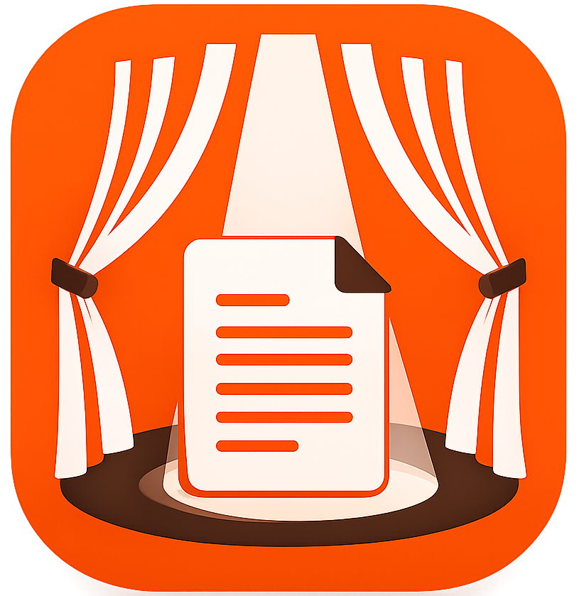

Scena XV
Personaggi in scena: Mirandolina, Fabrizio
MIRANDOLINA: A pranzo, che cosa comanda?
Campanello · suono

StageDesk ProApplicazione desktop per teatro e regia
Scrivi copioni, organizza personaggi e media, gestisci cue audio, video e immagini, porta il testo in modalità spettacolo ed esporta PDF pronti per la produzione.
MIRANDOLINA: A pranzo, che cosa comanda?
Cosa include
Gestione di atti, scene, battute, tabelle personaggi, note di regia, bookmark e collegamenti.
Audio, musica, immagini e video collegati al testo, con anteprime e controlli in editor e fullscreen.
Avanzamento per step, autoplay dei cue, shortcut da tastiera e controlli rapidi durante la lettura.
Esportazione completa o pulita, con rendering di titoli, battute, tabelle, citazioni e timbro pagina.
Salvataggio automatico nella cartella progetto e raccolta media organizzata per sistema di file.
Release pubblicate su GitHub con metadata per il sistema di aggiornamento automatico desktop.
Installer
Caricamento ultima release...
Gli installer sono pubblicati nella release GitHub ufficiale. Su macOS e Windows l'installazione può segnalare che il file non è firmato finché non saranno disponibili certificati di firma e notarizzazione.
Supporto
Il progetto è distribuito tramite GitHub. Da lì puoi consultare il codice sorgente, aprire segnalazioni, verificare le release e seguire gli aggiornamenti.